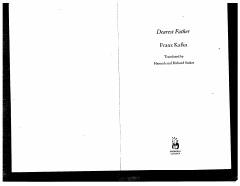

DFFranz Kafkaning otasi bilan murakkab munosabatlarini ochib beruvchi samimiy va chuqur maktubi.
Ushbu asar Franz Kafkaning o'z otasi Hermann Kafkaga yozgan mashhur maktubidir. Unda muallif otasi bilan bo'lgan murakkab munosabatlari, bolalikdagi qo'rquvlari va otasining hukmron shaxsiyati uning hayotiga qanday ta'sir qilganini tahlil qiladi.